-: PRODUCTS :-
AD Korwa Division is engaged in the manufacturing & repairing of various Avionics Systems for fitment on different Western, Indigenous & Russian origin aircraft platforms.
~~RECORDER SYSTEM~~
Solid State Flight Data Recorder/ Solid State Cockpit Voice & Data Recorder (SSFDR/CVFDR ) – MIL/ CIVIL CERTIFIED
Used to record critical flight parameters and voice for post flight analysis. Its variants are MIL / CIVIL certified. The SSFDR/CVFDR is developed for both Fixed & rotary Wing platforms.
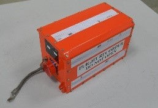
Deployable FDR
Deployable Flight Data Recorder is combination of CVR, FDR, and ELT fitted in buoyant hardened container with deployable mechanism. It is capable of automatically deploying from aircraft in event of aircraft accident. Once deployed, it begins continuously transmit its GPS location & identification at the emergency frequency 406 MHz and 121.5 MHz. Its unique structure enable it to float on water indefinitely in event of accident on water. It is suitable for aircraft and helicopter flying over sea area.
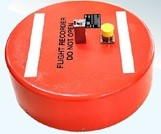
Enhanced FDR
The Enhanced FDR can record more parameter as compared to conventional Flight Data Recorders. It possess high capacity compact Protect Memory Module (PMM).
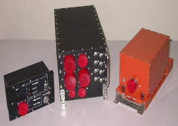
~~Display System~~
Multi-Function Display (MFD)
Multi-Function Display (MFD) provides the pilot with high resolution symbology overlaid on a video image coming from DMG and other interface systems. The MFD is built around a full high resolution, high contrast Active Matrix Liquid Crystal Display (AMLCD) device, allowing pilot to see the display image even under a high ambient light. It has high MTBF, 4 times in comparison to CRT. It displays video images coming from video sources such as RADAR, FLIR, OPTRONICS and Digital Map Generator.provides the pilot with high resolution symbology overlaid on a video image coming from DMG and other interface systems. The MFD is built around a full high resolution, high contrast Active Matrix Liquid Crystal Display (AMLCD) device, allowing pilot to see the display image even under a high ambient light. It has high MTBF, 4 times in comparison to CRT. It displays video images coming from video sources such as RADAR, FLIR, OPTRONICS and Digital Map Generator.
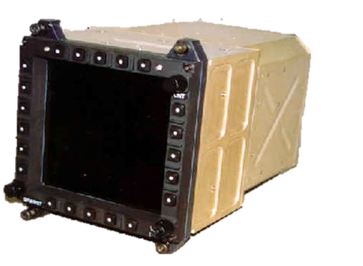
Pilot Control Unit (PCU-II)
Pilot Control Unit (PCU-II) is Human Machine Interface (HMI) of Automatic Flight Control System (AFCS). It provides interface between crew and AFCS.
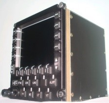
Engine & Flight Display Unit (EFDU)
Engine & Flight Display Unit (EFDU) is LCD display for EFIS system. It displays Air Data, Attitude, Heading information, Engine, fuel and hydraulic parameters information. EFIS is also integrated with avionics system through MIL 1553B bus.
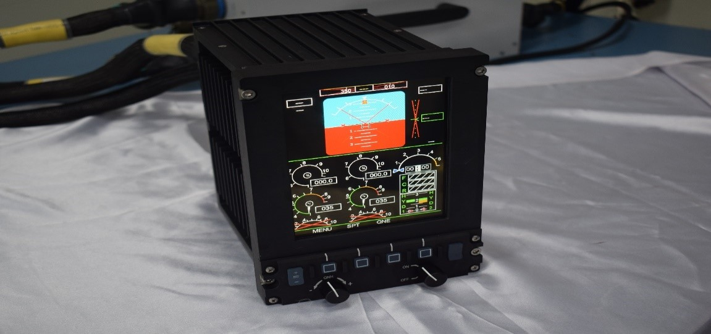
~~NAVIGATION SYSTEM~~
Inertial Navigation & Positing System(INGPS)
Inertial navigation is a process which allows a vehicle to locate itself in space (position, speed and attitude). INGPS is based on “strap-down” navigation systems. In such systems, all output values are calculated based on information delivered by the angular rotation (Ring Laser gyros) and linear acceleration (accelerometers) detectors. GPS Information is used to compensate the effect of inertial parameters drift, in order to compute optimal navigation data. The INS/GPS (Inertial Navigation System/ Global Positioning System) SIGMA 95 is a Strap down Inertial Navigation Unit (INU) based on Ring Laser Gyro, accelerometers and GPS receiver. It is licensed from M/s Sagem France now M/s Safran Defence & Electronics, France.
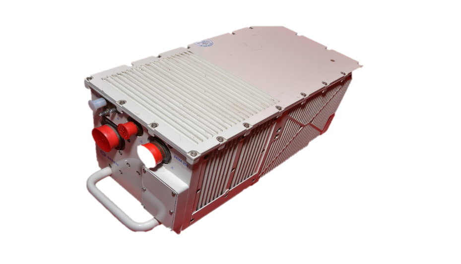
GPS GLONASS GAGAN Inertial Navigation System(G3INS)
An indigenous inertial system with an embedded GPS receiver that provides aircraft peripheral equipment with all necessary inertial inputs. The indigenous navigation system is compatible with GPS, GLONASS & GAGAN. The system has the option of added IRNSS capability also.
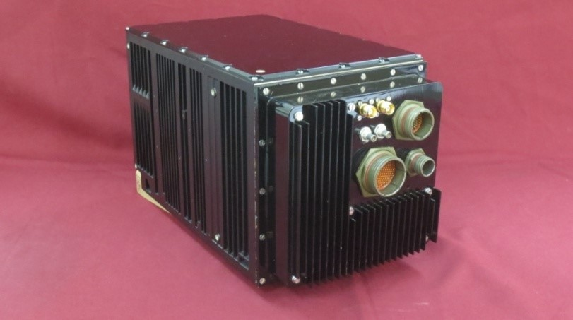
INERTIAL MEASURING BLOCK
INERTIAL MEASURING BLOCK is meant for determining and sending of components of linear acceleration( aX, aY, aZ) and components of absolute angular speed (wX, wY, wZ ) along mutually perpendicular axes of the aircraft in flight (with X- axis directed along the longitudinal axis of aircraft) for positioning of RADAR antenna. The unit has two dry tuned gyroscopes and three numbers of servo accelerometers.
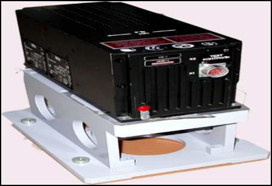
~~PROCESSORS & COMPUTERS~~
I-DGM
Indigenous Digital Map Generator is Digital Map Generator is being used for generation of Digital Map to be displayed on MFD. It superimposes symbology over digitized map.
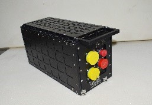
INTERFACE COMPUTER
Mission Management System consists of Interface Computer (IC), Display Computers (DC- 2no’s) and displays. The Interface Computer unit interfaces between Aircraft systems and Display Computers for collection & distribution of data. The IC unit is a real-time OS based airborne computer.
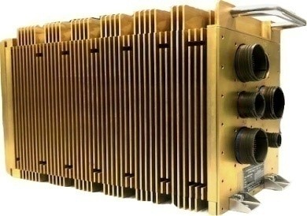
AUTOSTAB
The Auto Stabilizer improves the handling characteristics of the basic aircraft by providing damping inputs to the control surfaces for additional stability about the aircraft pitch, roll and yaw axis. It consists of five type of LRUs. The system consists of five type of LRUs.

~~OPTICAL & LASER SYSTEMS~~
OLS
OLS system is mounted in the nose of the aircraft to provide accurate range of enemy targets for weapon delivery commutation, and forms an integral part of the attack system
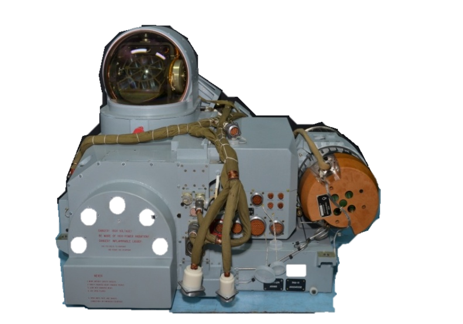
LRMS
The Laser Ranger and Marked Target Seeker, LRMTS is a system mounted in the nose of the aircraft to provide range of enemy targets for weapon delivery commutation, and forms an integral part of the attack system. It has the facility to range targets sighted by the pilot as well as unplanned targets, out of sight of pilot, but designated by a ground laser designator.
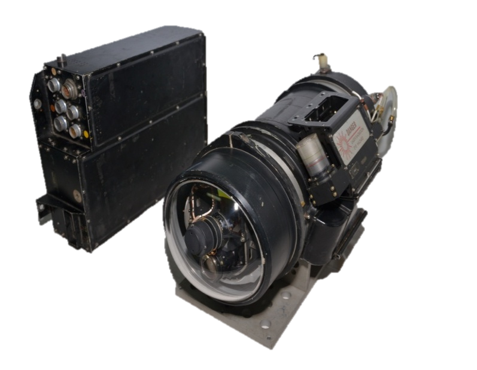
MULTI-MISSION OPTRONICS STABILISED PLATFORM(MOSP)
It is an electro-optical payload which provides video images (during day or day night) of the targets with the capability of acquiring and tracking targets under varying weather and visibility conditions.
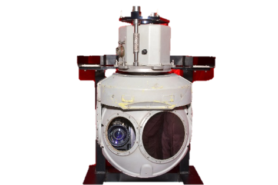